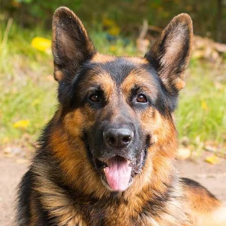
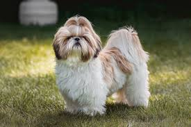

História de Amor
Início
Para Adoção
Sobre Nós
Contato
Amigos Esperando Por Você

Pastor Alemão - Macho - 1.5 anos
Thor
Dócil, brincalhão e ama correr no parque
Quero Adotar

Shih Tzu - Fêmea - 2 anos
Belinha
Amável, calma e adora carinho
Quero Adotar